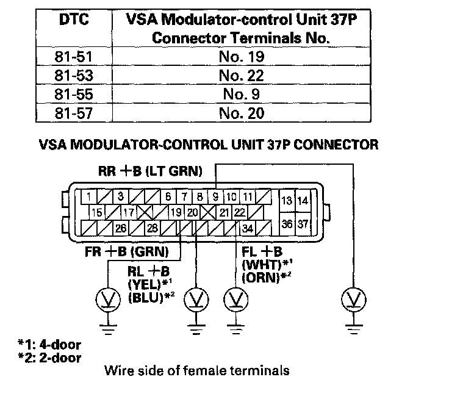

DTC 81-55
DTC 81-51: Central Processing Unit (CPU) Internal Circuit MalfunctionDTC 81-53: Central Processing Unit (CPU) Internal Circuit Malfunction
DTC 81-55: Central Processing Unit (CPU) Internal Circuit Malfunction
DTC 81-57: Central Processing Unit (CPU) Internal Circuit Malfunction
1. Turn the ignition switch ON (II).
2. Clear the DTC with the HDS.
3. Test-drive the vehicle.
4. Check for DTCs with the HDS.
Is DTC 81-51, 81-53, 81-55, or 81-57 indicated?
YES - Go to step 5.
NO - Intermittent failure, the system is OK at this time.
5. Turn the ignition switch OFF.
6. Disconnect the VSA modulator-control unit 37P connector.
7. Turn the ignition switch ON (II).
8. Measure voltage between body ground and the appropriate VSA modulator-control unit 37P connector terminals (see table).

Is there 0.1 V or more?
YES - Repair short to power in the wire between the appropriate wheel sensor and the VSA modulator-control unit.
NO - Replace the VSA modulator-control unit.